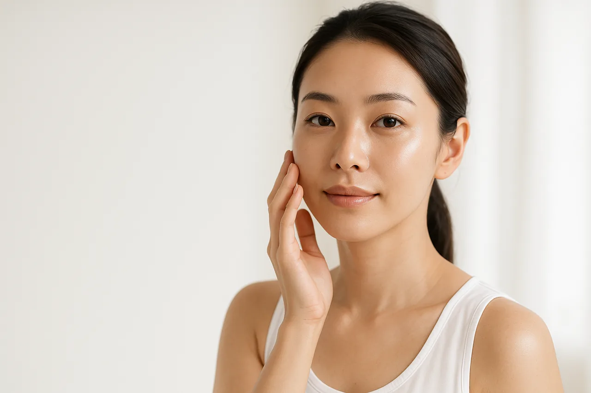
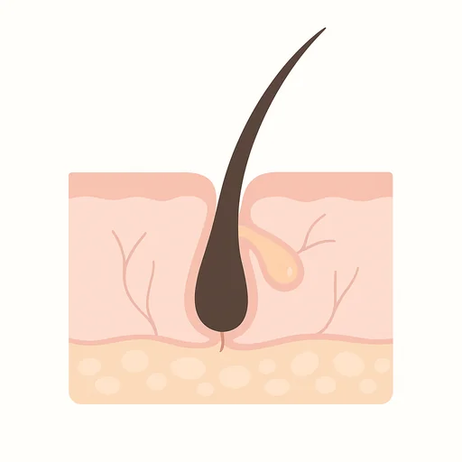
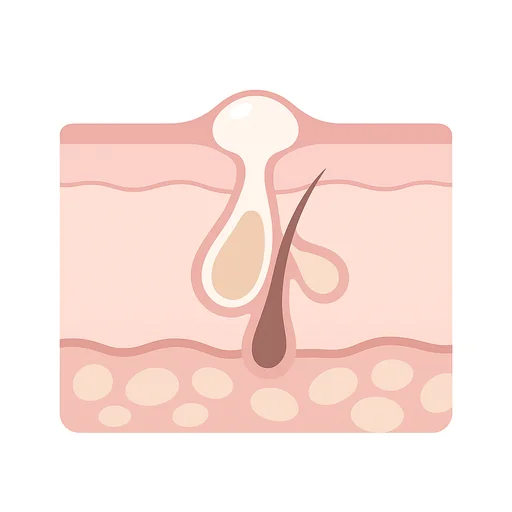
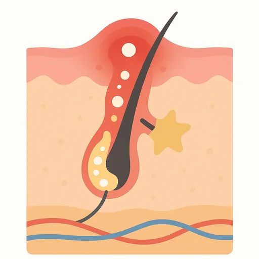

DRX AZAクリア

皮膚科医が着目するアゼライン酸ケア。
繰り返すニキビ・ニキビ痕・赤ら顔に。
ロート製薬が開発した「DRX AZAクリア」は、医療機関でのみ取り扱いが可能な高濃度アゼライン酸配合クリームです。洗顔やスキンケアだけでは防ぎきれないニキビの発生サイクルにアプローチし、毎日のホームケアで“できにくい肌”へ導きます。
こんなお悩みはありませんか？
- ニキビが何度も繰り返してしまう
- ニキビ痕の赤みや色素沈着が気になる
- 市販のニキビケアでは効果を感じられなかった
- 赤ら顔（酒さ）がなかなか改善しない
- テカリ・ベタつきが気になる脂性肌
- 刺激の少ないケアを長く続けたい
ひとつでも当てはまる方は、アゼライン酸によるホームケアがお役に立てるかもしれません。
DRX AZAクリアとは
-
DRX AZAクリアは、アゼライン酸20%を配合した医療機関向けのニキビ・酒さ治療用クリームです。ニキビ（尋常性ざそう）および赤ら顔（酒さ）の治療・予防を目的に設計されており、毎日のホームケアとして使用できます。
市販のスキンケア製品とは異なり、有効成分の濃度や処方が医療グレードで設計されているため、高い効果が期待できます。さらに、医師の指導のもとで適切に使用することで、より安全かつ効果的にニキビケアを行うことが可能です。
ご興味のある方は、当院のスタッフまでお気軽にお尋ねください。

主成分「アゼライン酸」とは
-
アゼライン酸は、小麦・大麦・ライ麦などの穀物に天然に含まれるジカルボン酸の一種です。欧米では1980年代からニキビや酒さの治療薬として皮膚科で使用されてきた、長い実績のある成分です。
他の治療薬に比べて刺激が少なく、副作用による皮むけが起きにくいため、敏感肌の方でも継続しやすいのがメリットです。ノンコメドジェニックテスト（コメド＝面皰を誘発しにくいかを確認するテスト）済みで、お肌の健康を第一に考えた天然由来の有効成分です。
アゼライン酸の4つの働き
アクネ菌・毛穴の詰まり・炎症・色素沈着。ニキビの一連のサイクルに多角的にアプローチします。
-
抗菌作用
アクネ菌の増殖を抑え、ニキビの発生・悪化を防ぎます。
-
角化を抑制
毛穴の過剰な角化を抑え、つまり（コメド）を防ぎます。
-
抗炎症作用
炎症をやわらげ、赤ニキビや赤みを穏やかに鎮めます。
-
美白作用
メラニンの生成を抑え、ニキビ痕の色素沈着にアプローチします。
DRX AZAクリアが選ばれる4つの理由
-
医療機関の専売品
皮膚科などの医療機関でのみ取り扱いが許可された専売品。医師の診察のもと、安心してご使用いただけます。
-
高濃度アゼライン酸20%
医療グレードで設計された高濃度処方。白ニキビ・赤ニキビ、ニキビ痕、赤ら顔まで幅広くアプローチします。
-
低刺激で続けやすい
天然由来成分で皮むけが起きにくく、敏感肌の方でも継続しやすい処方。毎日のケアに無理なく取り入れられます。
-
価格は据え置き
値上げが進むなか、当院は1本15g 1,980円（税込）を据え置きでご提供。続けやすい価格を大切にしています。
DRX AZAクリアがおすすめな方
- 繰り返すニキビにお悩みの方
- ニキビ痕の赤みや色素沈着が気になる方
- ベタつきやテカリが気になる脂性肌の方
- 市販のニキビケア製品では効果を感じられなかった方
- 刺激の少ないニキビケアの方法を探されている方
DRX AZAクリアが効果を発揮する肌悩み
DRX AZAクリアは、ニキビだけでなく、改善が難しいとされる赤ら顔（酒さ）のケアにも広く用いられています。
ニキビ・ニキビ痕
発生のきっかけとなる毛穴の角化（詰まり）を解消し、アクネ菌の増殖を抑えることで、白ニキビ・赤ニキビの両方に効果を発揮します。皮脂の酸化を抑える抗酸化作用により、ニキビの悪化も防ぎます。
さらに、ニキビ痕の色素沈着を改善する効果も期待できるため、ニキビのライフサイクル全体をケアできます。
赤ら顔（酒さ）
酒さ（しゅさ）は顔の中央部を中心に慢性的な赤みや炎症が生じる皮膚疾患です。アゼライン酸には血管内皮細胞の増殖を抑え、炎症を鎮める作用があるため、慢性的な赤ら顔の改善に有効です。
ステロイドのような副作用の心配がなく、長期的な維持療法として推奨されています。
ニキビができる仕組みとアゼライン酸の作用

① 正常な毛穴

② 毛穴のつまり

③ アクネ菌の増殖・炎症
毛穴のつまりから始まり、アクネ菌の増殖、炎症へと進行するのがニキビの悪循環です。DRX AZAクリア（アゼライン酸）は、①つまり・②菌の増殖・③炎症のすべてに働きかけてこの悪循環を断ち切り、ニキビ痕の色素沈着までトータルにケアします。
主な配合成分
ニキビのケアに有効なアゼライン酸を主成分に、肌への効果と使い心地を高める成分を配合しています。
アゼライン酸
本製品の主役となる有効成分。毛穴の詰まりを解消し、ニキビ菌を殺菌、さらにメラニンの生成をブロックして透明感のある肌へと導きます。
ホホバ種子油
人間の皮脂に構造が近いワックスエステルを豊富に含む植物性オイル。肌なじみが良く、アゼライン酸による乾燥感を防ぎ、バリア機能をサポートしながらしっとりとした柔軟性を与えます。
ナイロン-12
過剰な皮脂を吸着する微粒子成分。なめらかな塗り心地を実現し、クリーム特有のベタつきを抑えて塗布後の肌をさらさらに整えるため、朝のメイク前でも快適です。
ジグリセリン
保湿力の高い成分。一般的なグリセリンよりも保湿の持続性に優れ、しっとりとした潤いを長時間お肌に留めます。刺激が少なく、敏感肌や乾燥肌の方にも適しています。
使い方は3ステップ
DRX AZAクリアは、朝・夜の洗顔後に使用します。毎日のスキンケアに無理なく取り入れてください。
※スキンケアの順序は「洗顔→化粧水→DRX AZAクリア→保湿クリーム」が基本です。強くこすらず、指の腹でやさしく塗り広げてください。
効果実感の目安・継続のポイント
効果を感じるまでの目安
アゼライン酸の効果が肌で実感できるようになるまでには、一般的に4〜8週間程度の継続使用が必要とされています。初めて使用する場合は、まず1日1回（就寝前）から始め、肌の状態を確認しながら徐々に回数を増やすのがおすすめです。途中で効果を感じにくくても自己判断で中止せず、担当医と相談しながら根気よく続けることが大切です。
日焼け止めの併用を忘れずに
アゼライン酸には光感受性を高める作用があるため、日中に使用する場合は必ず日焼け止めを重ねてください。紫外線はニキビ痕の色素沈着を悪化させる原因にもなります。治療効果を最大限に引き出すためにも、毎日の紫外線対策を欠かさず行いましょう。
DRX AZAクリアの価格
| 製品名 | 容量 | 金額（税込） |
|---|---|---|
| DRX AZAクリア | 1本15g | 1,980円 |
当院の価格について
近年、DRX AZAクリアを値上げするクリニックが多くみられますが、当院では金額を据え置きでご提供しています。毎日続けるホームケアだからこそ、続けやすい価格を大切にしています。
※DRX AZAクリアは自費診療での処方です。
※購入には医師の診察が必要で、別途初診料がかかる場合があります。
よくあるご質問
効果を実感できるまで、どのくらいかかりますか？
個人差はありますが、一般的に4〜8週間程度の継続使用で変化を感じる方が多いとされています。すぐに大きな変化が出る製品ではないため、担当医と相談しながら根気よく続けることが大切です。
敏感肌でも使えますか？
アゼライン酸は他の治療薬に比べて刺激が少なく、皮むけが起きにくいため、敏感肌の方でも比較的続けやすい成分です。ただし使用開始から数日間はヒリつきや軽い赤みが出ることがあります。まずは夜1回から始め、心配な点は診察時にご相談ください。
妊娠中・授乳中でも使用できますか？
妊娠中・授乳中の方は、使用前に必ず医師にご相談ください。診察時に体調やご状況を伺ったうえで判断いたします。
1本でどのくらい使えますか？
1本15gで、使用量や使用部位にもよりますが、おおむね1〜2か月程度が目安です。パール粒1〜2個分を顔全体になじませる量でご使用ください。
他のニキビ治療と併用できますか？
内服薬や他の外用薬、ピーリングなどと併用できる場合が多くあります。お肌の状態によって最適な組み合わせは異なりますので、診察時にご相談ください。
使い始めにヒリヒリしますが大丈夫ですか？
使用開始時にヒリヒリ感・赤み・乾燥などの刺激症状が出ることがあります。多くは数日〜2週間ほどで落ち着きますが、症状が強い場合や長く続く場合は使用を中止し、担当医にご相談ください。
ご使用上の注意
使用上の注意
- 本製品は医師の指示のもと、適切な方法でご使用ください。
- 目・口・鼻の粘膜付近への使用はお避けください。誤って目に入った場合は、清潔な水で十分に洗い流してください。
- 傷・湿疹・炎症が強い部位には使用しないでください。
使用を避けるべき方
- 本製品またはいずれかの成分に対してアレルギーの既往歴がある方は使用しないでください。
- 妊娠中・授乳中の方は、使用前に必ず医師にご相談ください。
保管方法
- 直射日光・高温多湿を避け、涼しい場所で保管してください。
- 小児の手の届かない場所に保管してください。
- 開封後は衛生的に使用し、使用期限内にお使いください。
- （参考文献）
-
Standard Treatments and Skin Care for the Patients with Acne Vulgaris
- （監修者情報）
-
小谷 和弘
日本皮膚科学会 皮膚科専門医
厚生労働省指定 麻酔科標榜医
日本内科学会 認定内科医